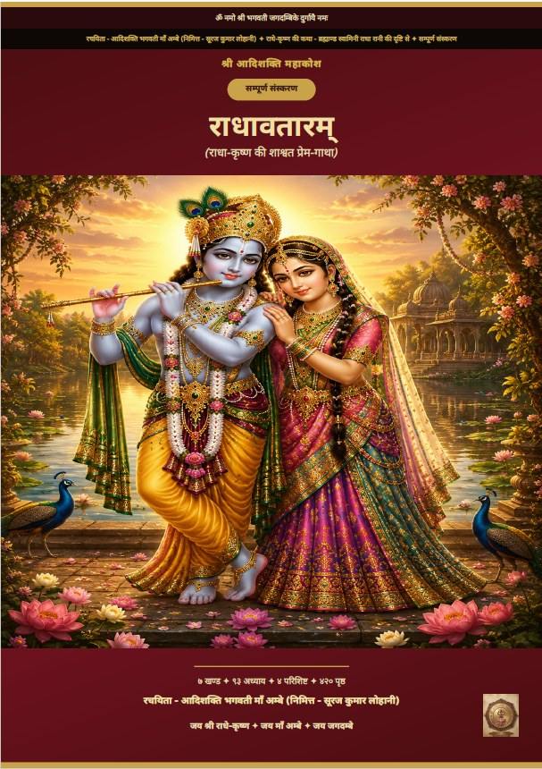

श्री आदिशक्ति प्रकाशन
रचना · भक्ति · प्रकाशनScriptures · Devotion · Publishing
माँ अम्बे की सेवा में समर्पित एक प्रकाशनA publication dedicated to the service of Maa Ambe
🔍
7 खण्ड · 93 अध्याय · 4 परिशिष्ट · 420 पृष्ठ7 Khands · 93 Chapters · 4 Appendices · 420 Pages · A4, Paperback ₹989 (incl. shipping) / Ebook ₹249
🌐राधावतारम् किसी अन्य भाषा में (ईबुक और पेपरबैक दोनों में) चाहिए? ईमेल करें या WhatsApp पर लिखें — भारतीय या अंतरराष्ट्रीय, आपकी पसंदीदा भाषा में लगभग 15–20 दिनों में उपलब्ध कराई जाएगी।Want Radhavtaram in another language (both ebook and paperback)? Email us or WhatsApp us — available in your preferred language, Indian or international, within approximately 15–20 days.

राधा को केवल प्रेयसी के रूप में नहीं, बल्कि स्वयं भगवान की आह्लादिनी शक्ति और प्रेम की सूत्रधार के रूप में देखा गया है। व्रज के आरंभ से लेकर अनन्त प्रेम और शांत-दर्शन तक — सात खण्डों में फैली यह रचना राधा-तत्व को आदिशक्ति भगवती माँ अम्बे के साथ जोड़कर प्रस्तुत करती है।Radha is seen here not merely as the beloved, but as the Lord's own Ahladini Shakti and the storyteller of divine love. From the beginning of Vraj to eternal love and serene realisation — spanning seven Khands, this work connects the essence of Radha to Adishakti Bhagwati Maa Ambe.
WhatsApp/Email से order करने पर 2% अतिरिक्त छूट — ईमेल करें भी उपलब्ध।An extra 2% discount is available on WhatsApp/Email orders — you can also email us.
| रचना कोडBook Code | SAP-002 |
|---|---|
| संपादकEditor | सूरज कुमार लोहानी — आदिशक्ति भगवती माँ अम्बे का निमित्तSuraj Kumar Lohani — Servant of Adishakti Bhagwati Maa Ambe |
| शृंखलाSeries | श्री आदिशक्ति महाकोशShri Adishakti Mahakosh |
| भाषाLanguage | हिन्दीHindi |
| संरचनाStructure | ७ खण्ड · ९३ अध्याय · ४ परिशिष्ट7 Khands · 93 Chapters · 4 Appendices |
| पृष्ठPages | ४२० (A4)420 (A4) |
| उपलब्ध रूपAvailable Formats | Paperback ₹989 (incl. shipping) · Ebook (PDF) ₹249 |
| प्रकाशकPublisher | श्री आदिशक्ति प्रकाशन, ग़ाज़ियाबाद (Udyam पंजीकृत)Shri Adishakti Prakashan, Ghaziabad (Udyam Registered) |
यह रचना सम्पूर्ण रूप से लिखी जा चुकी है — नीचे इसके सभी खण्ड और अध्याय दिए गए हैं।This work has been completed in full — all its Khands and chapters are listed below.
यह राधावतारम् आदिशक्ति भगवती माँ अम्बे के चरणों में समर्पित है — परमपिता भगवान शिव इस यात्रा के साक्षी हैं। यह रचना माँ ने लिखवाई है, सूरज कुमार लोहानी तो केवल निमित्त हैं।This Radhavtaram is dedicated at the feet of Adishakti Bhagwati Maa Ambe — Parampita Bhagwan Shiva is witness to this journey. This work has been written by Maa herself; Suraj Kumar Lohani is merely the Servant of Adishakti Bhagwati Maa Ambe.
राधा-माधवयोर्नित्यं प्रेमानन्दस्वरूपयोः।
चरणारविन्दयोर्भक्त्या नमामि सततं हृदा॥
राधा — जो केवल प्रेयसी नहीं, स्वयं आह्लादिनी शक्ति हैं — उनकी गाथा उन्हीं की महिमा में।Radha — who is not merely the beloved, but the Ahladini Shakti herself — her story is told in her own glory.
सबसे पहले — आदिशक्ति भगवती माँ अम्बे के चरणों में कोटि-कोटि प्रणाम। यह रचना मेरी नहीं है, मैं तो केवल निमित्त हूँ। माँ ने इसी निमित्त के माध्यम से अपनी ही महिमा को हिंदी कथा-रूप में संसार तक पहुँचाने की लीला की।First and foremost — countless salutations at the feet of Adishakti Bhagwati Maa Ambe. This work is not mine; I am merely the Servant of Adishakti Bhagwati Maa Ambe. Through this very instrument, Maa performed the pastime of bringing her own glory to the world in the form of a Hindi story.
परिवार के प्रति — शिखा: माँ अम्बे का प्रसाद, जीवन की प्रत्येक चुनौती में जिनका साथ और प्रेम मेरी शक्ति रहा। एशांश: माँ अम्बे का अंश, जिनकी मुस्कान मेरी सबसे बड़ी प्रेरणा है — यह रचना उन्हीं की विरासत है।To my family — Shikha: Maa Ambe's blessing, whose companionship and love have been my strength through every challenge of life. Eshaansh: Maa Ambe's own portion, whose smile is my greatest inspiration — this work is his legacy.
पाठकों के प्रति — जो भी इस रचना को पढ़ेंगे, सुनेंगे, या किसी अन्य को सुनाएँगे — उन सभी पर माँ अम्बे की अपार कृपा हो।To the readers — may Maa Ambe's boundless grace be upon everyone who reads this work, listens to it, or shares it with others.
परिवार या सत्संग-मंडली के साथ राधावतारम् का पाठ कैसे करें — एक सुझावित विधि।How to read Radhavtaram with family or a satsang gathering — a suggested method.
पहला अध्याय निःशुल्क डाउनलोड करें — खरीदने से पहले स्वयं अनुभव करें।Download the first chapter for free — experience it yourself before you buy.
नमूना अध्याय डाउनलोड करेंDownload Sample Chapter